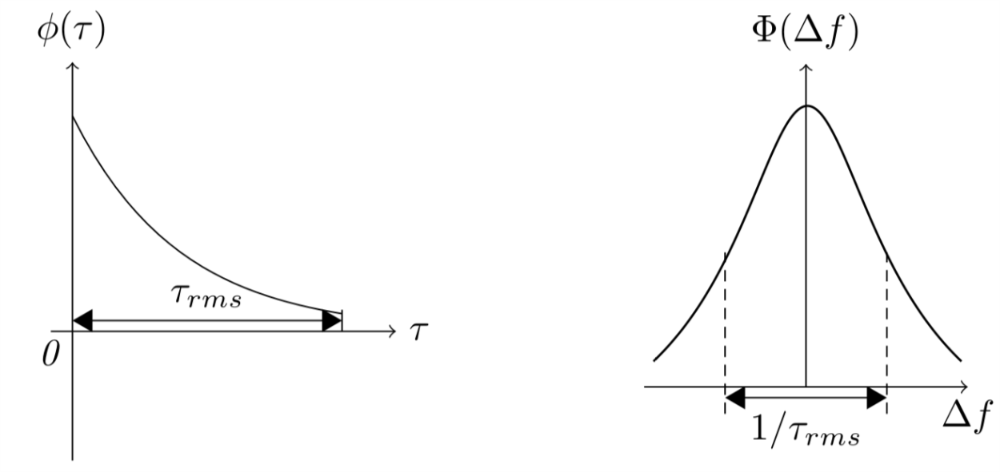

无线信道的四个重要参数
目录
1 四个重要参数
几乎每一篇关于无线通信物理层的博士论文第二章都有与无线信道相关的内容，稍后我会总结一篇关于无线信道的小文章。此处不可免俗的提及时延功率谱及其傅里叶变换（频率相关函数），多普勒功率谱及其傅里叶变换（时间相关函数）。时延功率谱的数学表达式为
\begin{equation} \label{eq:dps} \phi(\tau) = \frac{1}{2\tau_{rms}} \exp{\frac{-\tau}{\tau_{rms}}} \end{equation}对其进行傅里叶变换得到频率相关函数
\begin{eqnarray} \label{eq:fcf} \Phi(\Delta f) &=& \int_{\tau = 0}^{\infty} \phi(\tau) \exp(-j2\pi (\Delta f)\tau)d\tau \nonumber \\ &=& \frac{1}{2(1+j2\pi \tau_{rms}\Delta f)} \end{eqnarray}其幅度值为
\begin{equation} \label{eq:mfsf} |\Phi(\Delta f)| = \frac{1}{2 \sqrt{1 + 4\pi^2 \tau_{rms}^{2} (\Delta f)^2}} \end{equation}
图 1: 延时功率谱和频率相关函数
时延功率谱如图1所示。频率相关函数的幅度如图1所示。假设信道的频率相关函数的幅度在一定的频率范围内是不变的（或者说即使在此范围内的畸变很容易通过均衡技术纠正），定义这个频率范围为信道的相干带宽 \(B_c\approx 1/\tau_{rms}\) 。如果传输信号的带宽大于相干带宽，信号将受到频率选择性衰落影响。
发射机和接收机的相对运动会导致接收机接受信号的频率发生相对变化，产生附加频移，引起接收信号的频谱变化，附加频移又称为多普勒频移。其表达式如下
\begin{eqnarray} \label{eq:doppler} f_D& =& \frac{v}{\lambda}\cos{\alpha} \nonumber \\ &=& \frac{v}{c} f_c \cos{\alpha} \nonumber \\ &=& f_{D_{max}} \cos{\alpha} \end{eqnarray}其中 \(f_D\) 表示多普勒频移， \(v\) 表示相对运动速度， \(\lambda\) 表示无线电波波长， \(f_c\) 表示载波频率， \(\alpha\) 表示电磁波入射方向和接收机相对于发射机运动方向夹角。多普勒频移描述信号在频率域上的功率弥散情况。其闭式表达最初由Clarke\cite{clarke1996} 推出，Jakes谱\cite{jakes1974}能够反映实测的频率色散信道的功率谱密度的分布，是一种广为接受的信道多普勒功率谱，其表达式如下：
\begin{equation} \label{eq:jakes} S(f_D) = \frac{P_{av}}{\pi f_{D_{max}} \sqrt{ 1- (\frac{f_D-f_c}{f_{D_{max}}})^2}} \end{equation}其中 \(P_{av}\) 是接收信号平均功率。对其进行傅里叶反变换得到信道的时间相关函数 \(R(\Delta t)\)
\begin{eqnarray} \label{eq:tcf} R(\Delta t)&=& \frac{1}{2\pi} \int_{f_c -f_{D_{max}}}^{{f_c +f_{D_{max}}}} S(f_D) e^{j2\pi f_D(\Delta t)}df_D \nonumber \\ &=& \frac{P_{av}}{2\pi^2}e^{j2\pi f_c(\Delta f)}J_0(2\pi f_{D_{max}}(\Delta t)) \end{eqnarray}上式中 \(J_0()\) 为第一类零阶贝塞尔函数。定义相干时间 \(T_c\) ，假设信道在相干时间内保持基本不变。相干时间和多普勒频移之间的关系是 \[T_c \approx \frac{0.432}{f_{D_{max}}}\]